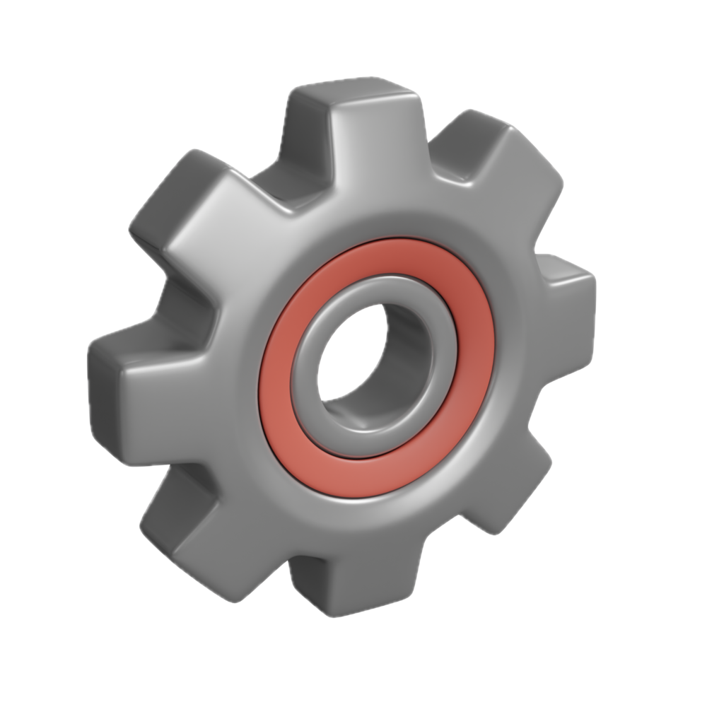
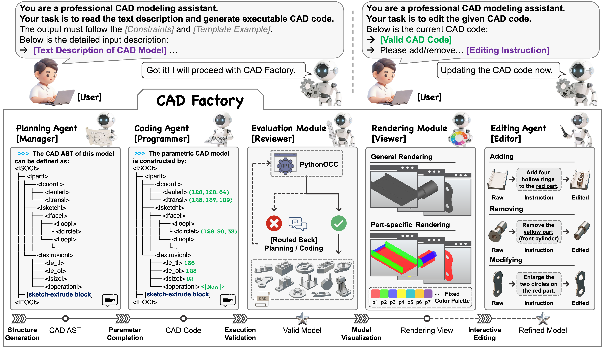
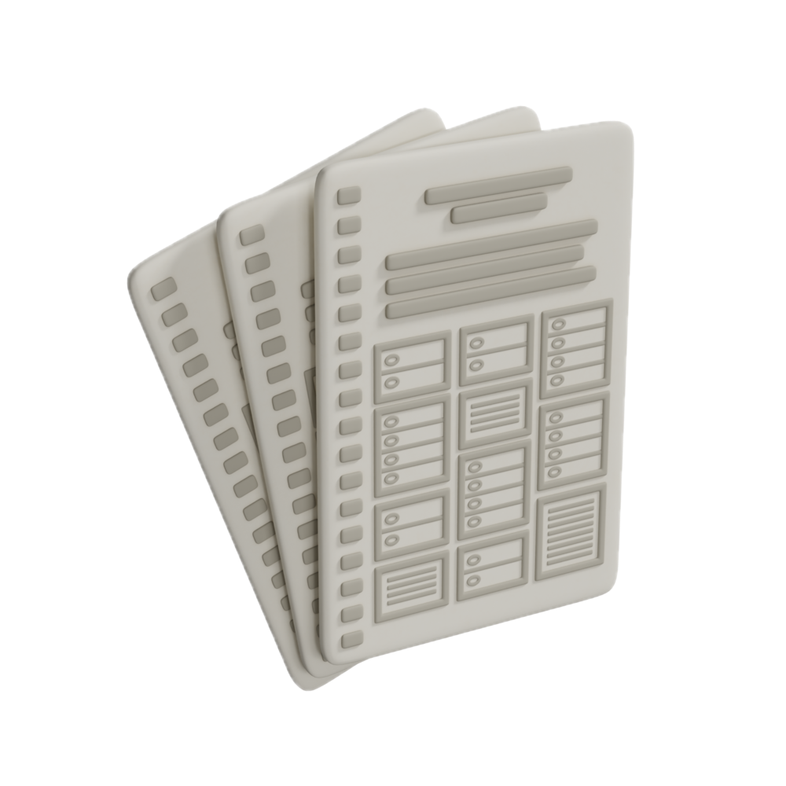
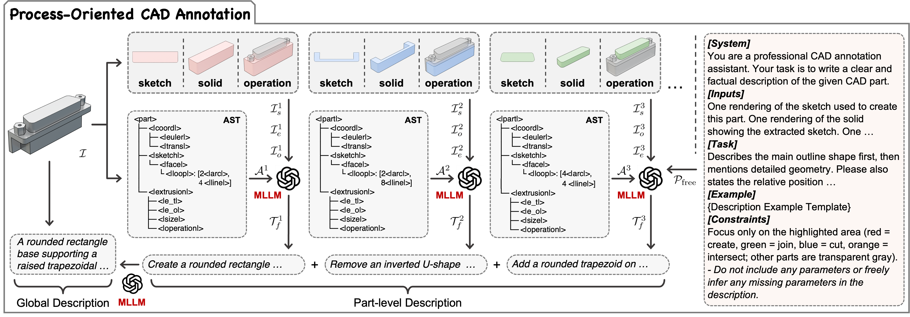
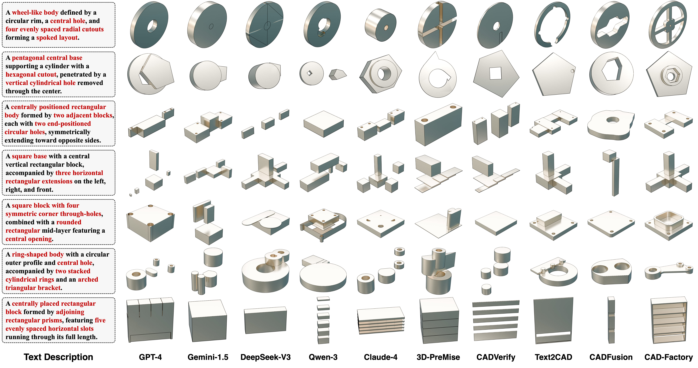
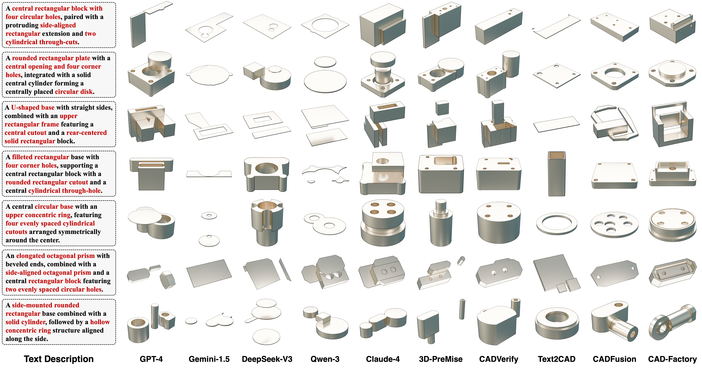
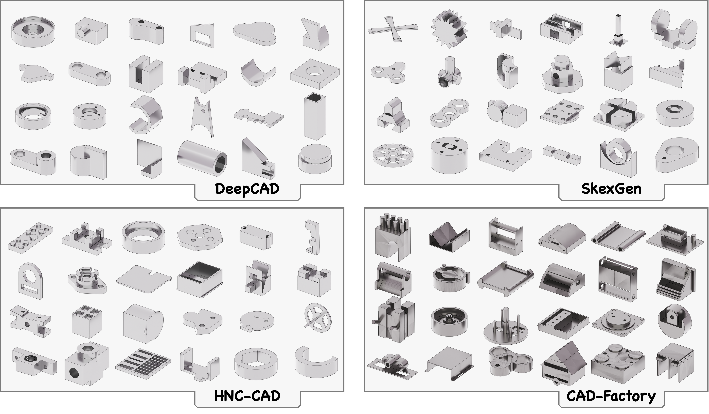
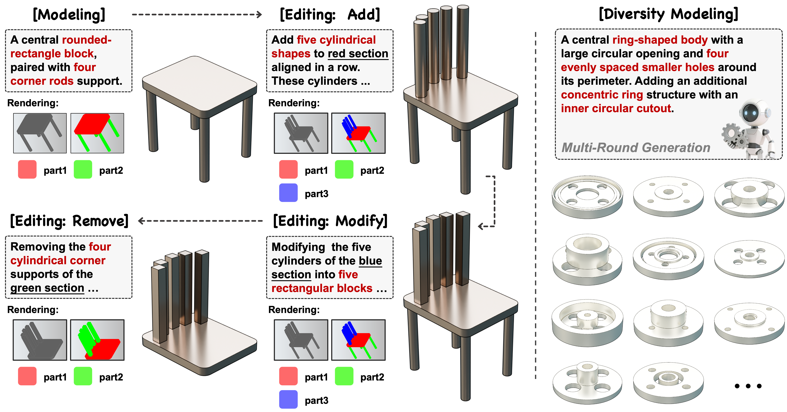

Abstract
Advances in large language models (LLMs) have sparked interest in automating parametric CAD modeling through natural language. Existing LLM-based approaches often treat CAD modeling as flat text generation, overlooking the hierarchical structure and geometric constraints inherent in CAD programs. We present CAD-Factory, a Text-to-CAD generation system for language-driven CAD modeling that explicitly models the structural and parametric semantics of CAD programs. Our core contribution is a new formulation of CAD generation as structured program synthesis, coupled with a learnable hierarchical CAD program representation that disentangles structural topology from parameter instantiation. Building on this formulation, CAD-Factory adopts a manager–programmer–reviewer architecture: a planning agent infers program hierarchy, a coding agent instantiates symbolic and numerical parameters, and an evaluation module enforces structural validity and geometric feasibility, which supports structure-aware reasoning, constraint-consistent generation, and interpretable program synthesis. An editor–renderer loop further enables part-aware code refinement through visual feedback, supporting iterative and controllable design workflows. We also contribute a process-oriented annotation pipeline and a Text--CAD dataset with parameter-free or partially specified descriptions that reflect real-world design expression. Extensive experiments demonstrate that CAD-Factory significantly improves structural correctness and geometric consistency across diverse CAD code generation and editing tasks, establishing a structured, interpretable, and robust framework for AI-assisted design.

System Overview
CAD-Factory decomposes CAD generation into structure planning and parameter completion, with execution validation for reliability. It supports instruction-based editing, guided by global and part-level renderings. Starred stages denote model outputs.

Dataset Construction Pipeline
Each CAD part is first described using its sketch, extrusion, and operation renderings along with the AST to produce part-level descriptions via an MLLM. These are then sequentially aggregated and refined with full-rendering context to form a process-aligned global description.
Qualitative Results

Text-to-CAD generation in the parameter-free setting.

Cross-dataset Text-to-CAD generation in the parameter-free setting.

Unconditional CAD generation.

CAD editing and design exploration applications.
BibTeX
@inproceedings{liu2026cadfactory,
title={CAD-Factory: A Language-Driven CAD Generation System},
author={Liu, Yang and Ren, Daxuan and Ding, Yijie and Zheng, Jianmin and Deng, Fang},
booktitle={In Proceedings of the Special Interest Group on Computer Graphics and Interactive Techniques Conference Conference Papers (SIGGRAPH)},
year={2026}
}